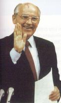

Leonid Breznev (1906-1982)
| Statista sovietico, uomo dell’apparato burocratico, fu eletto membro del Praesidium del Soviet Supremo (organo esecutivo) nel 1957 e nel 1960 presidente del Praesidium. Nel 1964, dopo l’estromissione di Kruscev divenne il primo segretario del Comitato centrale del PCUS (Partito comunista sovietico), carica che tenne fino alla morte. Fu un conservatore che fermò le riforme di Kruscev e avviò un’era di immobilismo nella politica interna alla quale si accompagnò la riaffermazione, nella politica internazionale, della guida del comunismo mondiale da parte dell’URSS. Ma il primato sovietico era messo in discussione dalla Cina di Mao, inoltre tra i partiti comunisti europei si delineava una via autonoma detta eurocomunismo. Nei rapporti con il paesi del Patto di Varsavia sostenne la dottrina della sovranità limitata, cioè il diritto dell’URSS a intervenire nei paesi satelliti dove riteneva minacciato il regime comunista. Furono rafforzati gli armamenti e l’URSS intervenne in appoggio a forze politiche locali in conflitti in Asia e in Africa (imperialismo sovietico). In particolare nel 1979 l’Armata rossa invase l’Afghanistan. | L.Breznev |
George Bush (1924-)
| Repubblicano successe a R.Reagan alla presidenza degli USA nel 1988. In politica interna seguì le orme del suo predecessore, e perfezionò gli accordi con il presidente dell’URSS M.Gorbacev per la riduzione degli armamenti. Nel 1989 gli USA attaccarono il generale Noriega, presidente di Panama accusandolo di essere un narcotrafficante. Tra il 1990 e il 1991 gli Usa furono tra i principali protagonisti della Guerra del Golfo. Saddam Hussein, leader dell’Iraq nell’agosto del 1990 occupò il Kuwait. Alla fine dell’anno una risoluzione dell’Onu intimava all’Iraq di ritirarsi dal piccolo stato e prevedeva l’uso della forza per far rispettare tale risoluzione. Nel gennaio del 1991 una forza multinazionale attaccò gli iraqueni costringendoli alla resa | G.Bush |
.
Jimmy Carter (1924-)
| Democratico successe a R.Nixon alla presidenza degli Usa nel 1976. Ereditò una situazione difficile per gli USA sia sul piano economico sia su quello politico. In politica estera affermò di rispettare il diritto dei popoli all’autodeterminazione ma fu criticato per aver lasciato che in alcuni paesi andassero al potere forze politiche ostili all’America, per esempio regimi filosovietici in Africa, in America Latina i sandinisti in Nicaragua, in Iran gli integralisti islamici. Il tentativo fallito di liberare ostaggi americani in Iran compromise il prestigio del presidente. Fu invece un successo in politica estera l’aver favorito la pace tra Egitto e Stato di Israele (trattato di Camp David del 1978) | J. Carter |
Winston Churchill (1874-1965)
| Statista inglese. Deputato conservatore nel 1900, fu più volte ministro, partecipò alla prima guerra mondiale. Durante la seconda guerra mondiale guidò l’Inghilterra, esortò i connazionali alla resistenza contro Hitler, si adoprò per l’intervento degli USA e l’alleanza con l’URSS in funzione antinazista. Battuto alle prime elezioni del 1945 in cui vinsero i laburisti, sostenne una politica energica nei confronti del comunismo. Tornato al potere nel 1951 riconobbe le zone di influenza dei contrapposti blocchi occidentale e sovietico. | W.Churchill |
Dwight Eisenhower (1890-1969)
| Generale nella seconda guerra mondiale, repubblicano, fu eletto presidente degli USA nel 1952. Protagonista della guerra fredda e sostenitore di una politica aggressiva nei confronti dell’URSS, il cosiddetto roll back, durante la sua presidenza il senatore MacCarthy scatenò la cosiddetta caccia alle streghe, cioè una persecuzione nei confronti di intellettuali, sindacalisti, cineasti, ecc. accusati di non essere abbastanza anticomunisti. In America nacque la società dei consumi, almeno per quello che riguardava il ceto medio. Fu rieletto nel 1956, ma dopo il periodo di sviluppo postbellico l’economia americana cominciò a dare segni di stanchezza e si verificarono disordini razziali. La Corte Suprema degli USA impose l’integrazione scolastica ma tale principio incontrò opposizioni negli Stati del Sud. Il lancio del primo satelliti spaziale da parte dell’URSS, lo Sputnik, nel 1957, turbò la sicurezza degli americani. furono aumentate le spese per la difesa e l’istruzione. | D. Eisenhower |
Michail Gorbacev (1931-)
| Divenuto segretario del Partito comunista sovietico nel 1985 cercò di ristrutturare l’economia e la società dell’URSS. Sul piano economico lanciò con scarso successo la perestrojka, cioè una riforma per introdurre elementi di mercato nel sistema centrallizzato sovietico, sul piano politico diede spazio alla libertà di espressione e a tutte le libertà individuali e collettive (glasnost= trasparenza). Per democratizzare il partito e lo Stato ne promosse la separazione e modificò la costituzione dell’URSS. Nel 1990 fu eletto presidente. Importante fu soprattutto il suo impegno per la pace e la cooperazione che rese possibile due incontri con il presidente USA Reagan e un terzo a Washington nel 1987 nel quale fu deciso lo smantellamento degli euromissili. Accordi per il disarmo furono perfezionati poi con il successore di Reagan, G.Bush. Favorì le riforme nei paesi del Patto di Varsavia e ritirò l’armata da russa dall’Afghanistan. La sua politica interna incontrò vari ostacoli: in particolare la crisi economica e il risveglio dei nazionalismi. A questo proposito bisogna ricordare che per prime le repubbliche baltiche (Lettonia, Estonia e Lituania), poi la stessa Repubblica russa nel 1990 si dichiararono indipendenti. Gorbacev incontrò vivaci opposizioni sia da parte dei comunisti conservatori sia da parte delle forze che volevano il totale smantellamento del socialismo. Nel 1991 rassegnò le dimissioni. |  Michail Gorbacev |
Ernesto Guevara, detto il Che (1928-1967)
| Nato in Argentina nel 1928, partecipò alla lotta contro la dittatura peronista, poi si unì a Fidel Castro che lottava per liberare Cuba dalla dittatura del generale Batista. Dopo la vittoria dei castristi, abbandonò l’isola caraibica per continuare la lotta a fianco dei contadini contro i latifondisti e i governi dittatoriali sostenuti dagli USA.Fu ucciso in Bolivia nel 1967. | il Che |
Lyndon Jonhson (1908- 1973)
| Politico democratico, succede a Kennedy dopo il suo assasinio. Rieletto
nel 1964, porta avanti la politica di riforme e di sostegno ai diritti civili,
ma in politica estera la sua presidenza è segnata dal crescente
coinvolgimento nella guerra del Vietnam. Il clima interno è molto
teso per le lotte dei neri che si ispirano al Black Power e la contestazione
della guerra del Vietnam. Nel '68 vengono assassinati M.Luther King, leader
nonviolento del movimento per i diritti civili dei neri e Robert Kennedy,
fratello di JFK e candidato alla presidenza. Gli succende il repubblicao
Nixon.
|
L.Jonhson |
John Fitzgerald Kennedy (1917-1963)
| Democratico, fu eletto presidente degli USA nel 1960. Si richiamò alla tradizione progressista di Wilson e di Roosevele, aggiornandola con il richiamo a una "nuova frontiera" da superare identificata con la lotta contro la tirannide, la miseria, la malattia, la guerra. In economia aumentò la spesa pubblica e fece opere pubbliche per assorbire la disoccupazione, aumentò anche il bilancio della difesa e della ricerca in campo spaziale. Si battè insieme con il fratello Robert, ministro per la giustizia, per l’estensione dei diritti civili ai neri. In politica estera si dichiarò a favore della distensione con l’URSS di Kruscev, anch’egli favorevole ad una competizione pacifica, tuttavia prorpio durante la presidenza Kennedy si verificarono le crisi più gravi nei rapporti tra Est ed Ovest, che portarono il mondo sull’orlo della guerra mondiale: la crisi di Berlino (dopo il fallimento di un incontro su Berlino Ovest, i sovietici innalzarono il Muro) e quella di Cuba (i sovietici avevano installato nell’isola caraibica rampe missilistiche. Sentendosi sotto la minaccia di un attacco, gli USA reagirono imponendo ai russi di rimuoverle. Vi fu una prova di forza che si concluse con il ritiro del progetto di installazione di missili a Cuba). Il presidente iniziò un impegno americano nel Vietnam del Sud dove mandò dei consiglieri militari. Nel 1963 fu firmato un trattato tra USA e URSS per la fine degli esperimenti atomici nell’atmosfera. Nel 1963 Kennedy fu ucciso a Dallas nel Texas. | JFK |
Martin Luther King (1929-1968)
| Pastore battista, leader del movimento antisegregazionista negli USA,
predicava la non-violenza e organizzò manifestazioni pacifiche a sostegno
dell’estensione dei diritti civili.
Famosa la marcia dei centomila a Washington (nel 1965), nella quale fece lo storico discorso che iniziava con le parole: I have a dream. Ricevette il premio Nobel per la pace. Fu ucciso a Memphis nel 1968.
|
M.L.King |
Nikita Kruscev (1894-1971)
| Statista sovietico. Nel 1934 divenne segretario del partito comunista nella regione di Mosca, nel 1939 entrò a far parte del Politburò e del supremo consiglio di guerra. Nel 1952 divenne membro del Praesidium del Comitato Centrale e dopo la morte di Stalin diventò il primo segretario del partito. Nel 1956 denunciò i crimini di Stalin e avviò la destalinizzazione dell’URSS. Intraprese alcune riforme in campo economico per attenuare il centralismo. Sotto di lui iniziò l’avventura spaziale sovietica con il lancio dello Sputnik. In politica estera propose una coesistenza e una competizione pacifica con l’Occidente e riconobbe la possibilità di vie nazionali al socialismo. Sotto di lui avvenne la repressione della rivoluzione ungherese nel 1956, e, nonostante il programma di distensione, alcuni dei momenti più difficili della guerra fredda: la costruzione del muro di Berlino e la crisi di Cuba. Fu estromesso dal potere nel 1964. |
N. Kruscev |
Richard Nixon (1913-1994)
| Repubblicano, eletto presidente degli USA nel 1968, si avvalse per la politica estera della collaborazione dell’abile diplomatico segretario di Stato Henry Kissinger. Aprì prospettive diplomatiche nei confronti della Repubblica Popolare Cinese e mantenne aperto il dialogo con l’URSS. Lente e difficili furono le trattative per porre fine alla guerra del Vietnam e per ottenere una "pace con onore". Si conclusero nel 1973 a Parigi dove venne firmato un armistizio in base al quale gli americani si ritirarono, ma il Vietnam del Sud privo dell’aiuto americano fu occupato dal Vietnam del Nord. Per combattere la crisi economica, pose barriere protezionistiche e sospese la convertibilità del dollaro in oro. Fu rieletto nel 1972, ma poco dopo fu coinvolto dallo scandalo del Watergate (fu accusato da giornalisti dell’"Washington Post" di aver messo sotto controllo e spiato i telefoni dei suoi avversari politici). Nel 1973 i paesi occidentali furono travolti dalla crisi petrolifera originata dall’embargo del petrolio da parte dei paesi arabi produttori i quali volevano punire i paesi occidentali per l’appoggio da loro dato ad Israele in occasione della ripresa della guerra tra Egitto e Stato di Israele. Nel 1976, per evitare l’impeachment si dimise. | R.Nixon |
Ronald Reagan (1911-)
| Ex-attore, repubblicano tenne la presidenza degli USA con due mandati dal 1980 al 1988. Per risollevare il paese dalla crisi economica ed attirare gli investimenti, rimosse tutti gli ostacoli che potevano intralciare la libertà di iniziativa privata e il funzionamento del mercato autoregolantesi, diminuì le tasse per i ceti più ricchi, alzò i tassi di interesse, tagliò drasticamente la spesa sociale (scuole, sanità,ecc.). Aumentò invece il bilancio militare. Vi fu una ripresa della produzione e una diminuzione della disoccupazione, ma aumentò il disavanzo del bilancio federale, così pure il disavanzo commerciale con l’estero e i debiti di famiglie e imprese. Aumentarono i poveri e si accentuò il divario tra ricchi e poveri; nel 1987 vi fu una crisi della borsa di New York. In politica estera volle ristabilire il prestigio degli USA, affermare il primato americano nel mondo e trattare con l’URSS da posizioni di forza. Cercò di lanciare un costoso programma di difesa contro i missili, detto scudo stellare, ma venne anche ad accordi per la riduzione delle armi nucleari con il leader dell’URSS Gorbacev. In America latina continuò la politica imperialista invadendo Grenada, finanziando in Nicaragua la guerriglia dei contras che si oponevano al regime di sinistra dei sandinisti, sostenendo governi dittatoriali del Centro-America e ordinando un attacco aereo su Tripoli dopo aver accusato il leader libico Gheddafi di sostenere i terroristi. Alla fine della sua presidenza, alcuni suoi collaboratori furono accusati di aver venduto armi all’Iraq (durante la guerra tra Iraq e Iran) violando l’embargo. | R. Reagan |
Franklin Delano Roosevelt (1882-1945)
| Statista statunitense. Senatore democratico, poi presidente degli Stati
Uniti dal 1936 fino alla morte. Negli anni Trenta mise in atto il New Deal,
cioè una politica economica volta a risollevare gli USA dalla grave
crisi del 1929 con interventi dello Stato a favore dell’occupazione
e del rilancio dell’economia e riforme sociali.
Avverso al fascismo e al nazismo, si battè contro l’isolazionismo americano e fece partecipare gli USA nel 1941 alla seconda guerra mondiale. partecipò alle conferenze per delineare il nuovo ordine mondiale e diede un personale contributo al progetto di costituire l’Onu.
|
F. D. Roosevelt |
Josif Stalin (1879-1953)
| Statista sovietico. Partecipò alla rivoluzione russa del 1905 e a quella del 1917. Alla morte di Lenin (1924) riuscì vincitore nella lotta per la successione. Sostenitore del "socialismo in un solo paese" avversò la linea di Trotzkij a favore della "rivoluzione permanente", ed eliminò gli avversari politici. A partire dal 1929 attuò la pianificazione dell’economia e la collettivizzazione delle terre. Il culto della personalità e le "purghe" cioè i processi contro gli esponenti del partito che dissentivano dalla sua politica caratterizzarono gli anni Trenta. Temendo l’isolamento dell’URSS e l’aggressione da parte di Hitler, stipulò con la Germania nazista nel 1939 un patto di non aggressione, ma nel 1941 l’esercito nazista attaccò l’URSS. Dalla fiera resistenza di Stalingrado iniziò la sconfitta di Hitler e l’avanzata dell’armata rossa nell’Europa orientale. Stalin partecipò alle conferenze degli alleati sull’assetto da dare all’Europa dopo la sconfitta di Hitler e fu poi uno dei protagonisti della guerra fredda. Per il ruolo giocato dalla Russia nella lotta al nazifascismo, Stalin godette di prestigio fino alla sua morte nel 1953. Il suo successore, nel XX Congresso del Partito Comunista nel 1956 ne denunciò i crimini e iniziò un processo di destalinizzazione dell’URSS. | J.Stalin |
Tito (Josif Broz) (1892-1980)
| Statista jugoslavo. Capo della resistenza jugoslava al nazismo, dopo
la fine della guerra fu ministro dal 1945 al 1953 poi presidente della Repubblica
federale jugoslava. Nel 1948 si dissociò da Stalin e inaugurò
una via nazionale al socialismo. Dopo la morte di Stalin fu uno dei promotori
del Movimento dei Non Allineati che tendeva a formare un terzo schieramento
autonomo dai due blocchi. Venuta meno la sua leadership carismatica, la crisi
economica e l’esplosione dei nazionalismi hanno precipitato la Jugoslavia
in una sanguinosa guerra agli inizi degli anni Novanta.
|
Tito |
Harry Truman (1884-1972)
| Statista statunitense. Democratico, divenuto presidente alla morte di
Roosevelt nel 1945, decise lo sganciamento della bomba atomica sulle città
giapponesi di Hiroshima e Nagasaki. Protagonista della guerra fredda, nel
1947 enunciò la dottrina che da lui prende nome volta ad arginare
l’espansione della Russia. Essa consisteva nei seguenti punti: appoggio
all’Onu, oranizzazione della difesa delle Nazioni del Nord-Atlantico
(Patto Atlantico), aiuti per la ricostruzione europea (Piano Marshall).
|
H.Truman |